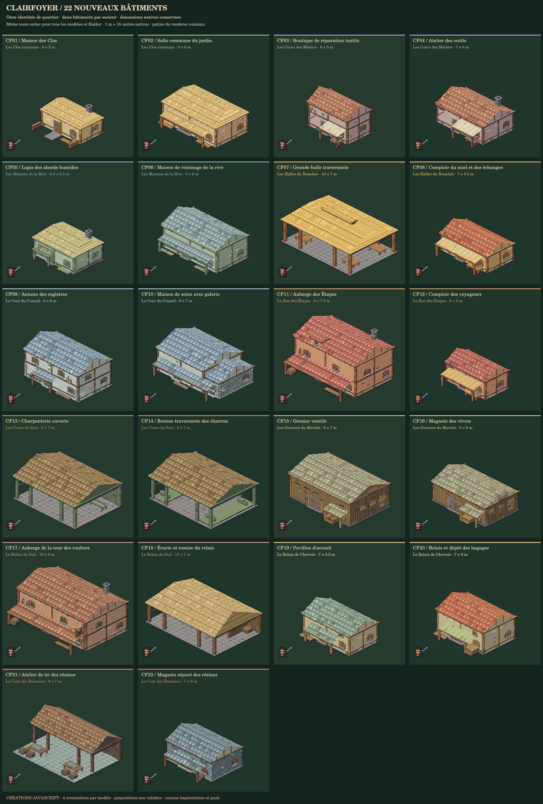
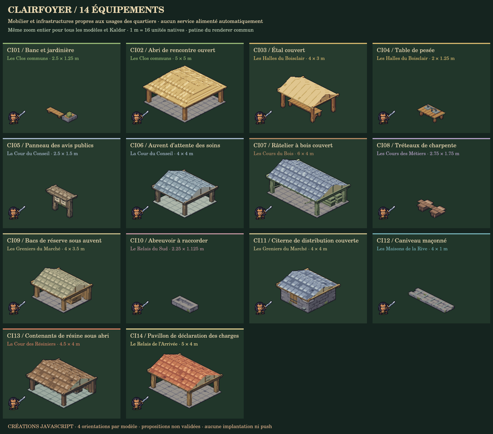

Clairfoyer : 36 créations en pixels JavaScript
22 bâtiments et 14 infrastructures, dessinés avec le renderer commun : mêmes matériaux, patine et contours, avec onze palettes de quartier et des variations de charpente, de toiture et d’auvents. Chaque référence tourne comme un volume complet dans ses quatre orientations.
Propositions non validées. Aucun placement ou service du jeu n’est modifié. Citernes et abreuvoirs restent à raccorder ; les contenants ne créent aucun stock. Les bâtiments publics ne sont pas encore dimensionnés pour couvrir toute la population.
Quartiers et fonctions · Catalogue et géométrie · Contrôles techniques
PNG natif de cette vue · Comparer avec les bâtiments existants


Planche complète des bâtiments

Planche des infrastructures

Échelle, accès et intégration
Une unité native garde la même projection et la même taille que dans la bibliothèque existante. Les dimensions au sol suivent 16 unités par mètre ; la porte conserve un dégagement de 22 unités. Kaldor utilise les pixels actuels du jeu, sans redimensionnement indépendant.
Les volumes solides et les points de travail sont définis avec les dessins. Les halles et remises conservent des passages libres. Les maisons fermées gardent leur fondation bloquante ; les portes représentées n’ajoutent pas encore des intérieurs jouables. Les calques et profondeurs permettent le tri et le fondu de la maison entière par le renderer du jeu, sans modifier les collisions.
Les nouveaux fichiers restent un catalogue d’auteur distinct : ils ne sont ni enregistrés dans le jeu ni implantés dans les quartiers. Les futurs placements doivent réserver leurs emprises et leurs accès, puis rééquilibrer les logements remplacés.